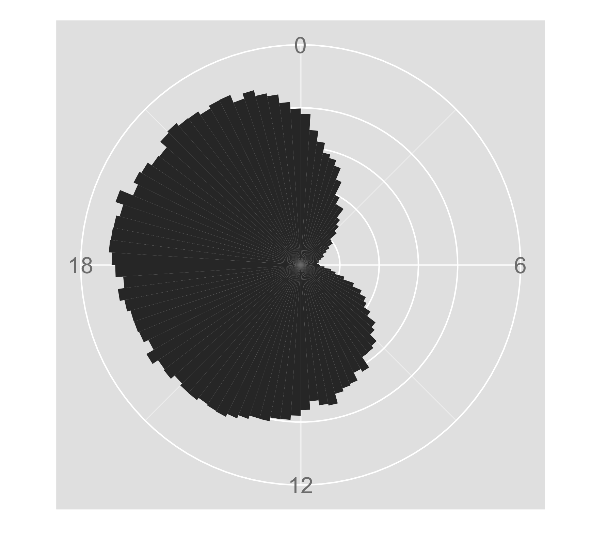
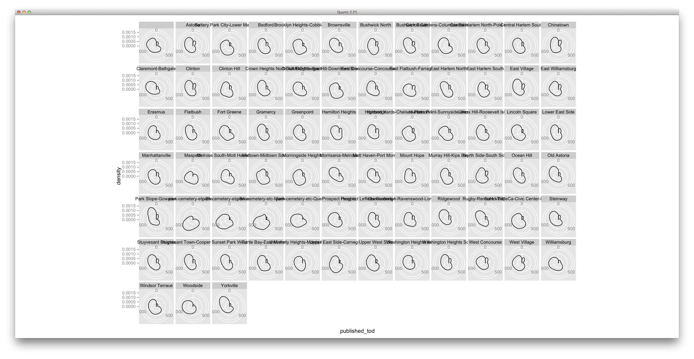

During the first week of October 2013 there were about 310,000 Instagram posts in New York City, from over 100,000 users.
What did they sound like?
How we explored the data
This project began as a curiosity about using data to render sonic compositions — ideally ones that represent patterns in large quantities of social data.

Explorations by neighborhood
Click on a neighborhood to see and hear its histogram
These histograms, laid out like 24-hour clocks, represent Instagram post volume as it changes over an average day in a particular neighborhood. In Midtown, for instance, there is a much larger volume of posts during the work day. Parks have spikes in the daylight hours. The sound that plays along with each neighborhood's histogram starts at midnight and changes in frequency and the volume of posts changes over a 24-hour period. Below, you can see the histogram for all of NYC, and compare the unique signature of each neighborhood to the average.

Here is a grid of all the histogram outlines. The thumb-like component of the histograms could be said to represent the neighborhood's nightlife—a more pronounced thumb represents more Instagram activity between midnight and 3AM.

{kind=link}